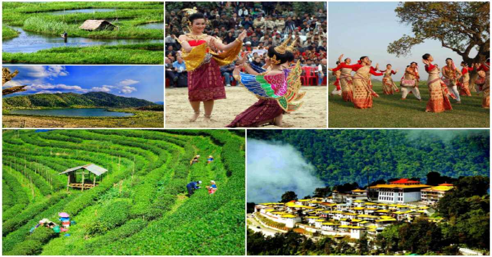

//Yashvardhan
<!DOCTYPE html>
<html lang="en">
<head>
    <meta charset="UTF-8">
    <meta http-equiv="X-UA-Compatible" content="IE=edge">
    <meta name="viewport" content="width=device-width, initial-scale=1.0">
    <title>Blog</title>
</head>
<body style="background: black;">
  <div class="column">
    <div class="row" style="border:solid;color: white;">
    <p style="clear: left; color: white; font-size: 30px;">ImageMap </p></div>
   <div class="row">
   
<map name="image_map">
  <area alt="Assam" title="Assam" href="https://en.wikipedia.org/wiki/Assam" coords="201,126,202,128" shape="rect">
  <area alt="Arunachal Pradesh" title="Arunachal Pradesh" href="https://en.wikipedia.org/wiki/Arunachal_Pradesh" coords="227,202,228,204" shape="rect">
  <area alt="Sikkim" title="Sikkim" href="https://en.wikipedia.org/wiki/Sikkim" coords="471,498,472,500" shape="rect">
  <area alt="Manipur" title="Manipur" href="https://en.wikipedia.org/wiki/Manipur" coords="471,461,472,462" shape="rect">
  <area alt="Nagaland" title="Nagaland" href="https://en.wikipedia.org/wiki/Nagaland" coords="395,550,396,551" shape="rect">
</map></div></div>

</body>
</html>
